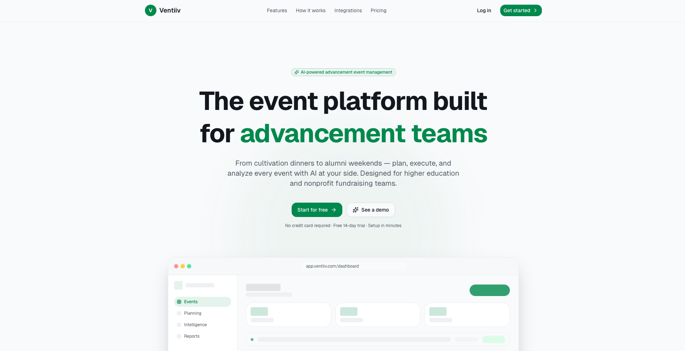

Work
01
Building an at-home climbing wall turns an abstract idea into a physical commitment — requiring planning, problem-solving, and a willingness to learn through trial and error. Each panel, hold placement, and angle forces intentional decisions that mirror the process of designing any system meant to be used and refined over time.
View Project →02
Turn every event into donor intelligence.
Advancement teams run hundreds of events every year and lose almost all the data from them. Eventiiv is an AI-native, end-to-end event management platform built for nonprofits and higher education — covering the full six-phase event lifecycle from planning through post-event intelligence. No competitor in the advancement space covers all six. Most stop at registration.
The platform combines AI-assisted event creation, structured donor data capture at registration, QR-based check-in with staff interaction tagging, post-event stewardship automation, and an intelligence layer that learns from every event your team runs.
View Project →
03
A social app and website connecting vintage lovers, thrifters, and community builders. Explore markets, pop-ups, and local shops — designed to make the secondhand economy more discoverable and social.
View Project → GitHub →